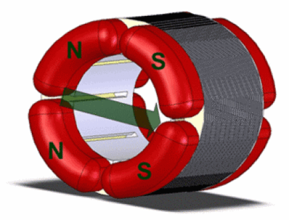

Courants induits
L'induction B due au champ magnétique tournant, balaye les conducteurs du rotor formant la cage d'écureuil et crée, dans ceux-ci, un courant induit.
D'après la loi de Lenz : Le sens du courant induit est tel qu'il s'oppose à la variation de flux qui lui a donné naissance, ce qui va conduire à la mise en mouvement du rotor (Loi de Laplace) pour tenter d'annuler la variation de flux.

Représentation du champ magnétique tournant créé par les enroulements du stator.
Représentation du sens du courant dans un conducteur du rotor (on observe l'inversion du sens de parcours du courant).